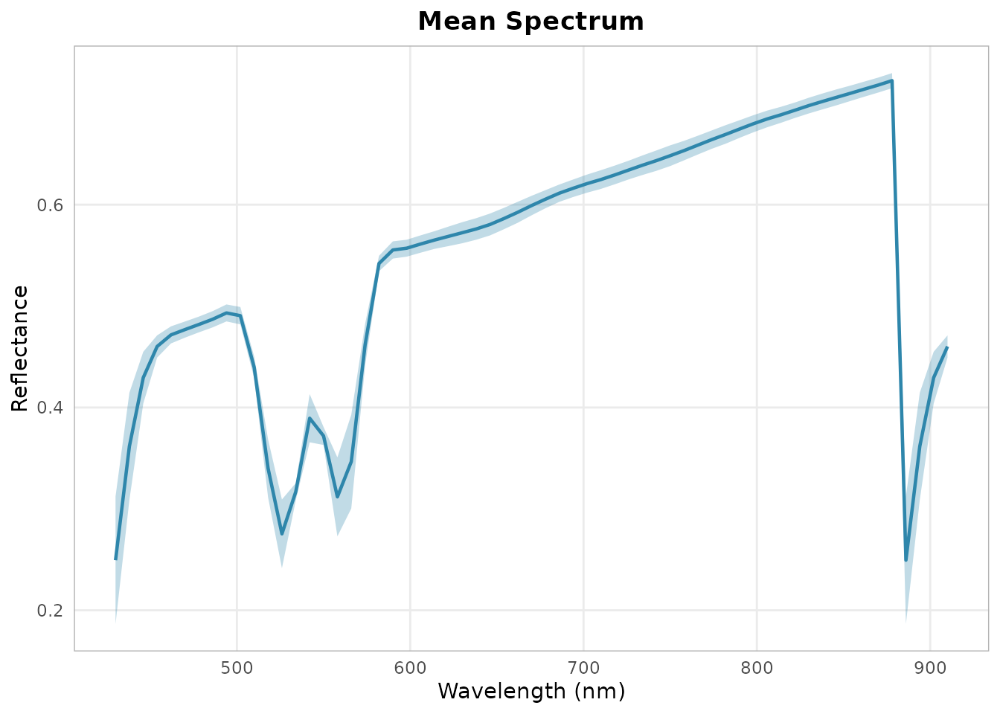
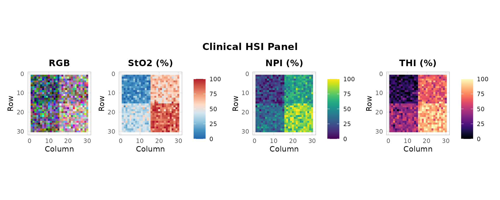

library(hyperspectR)
#> hyperspectR v0.1.0 - Hyperspectral Imaging Analysis for Biomedical ApplicationsOverview
This vignette demonstrates a complete workflow for processing hyperspectral data from the Cubert Ultris X MR camera. While the examples use synthetic data, the code translates directly to real camera acquisitions.
Cubert Ultris X MR Specifications
The Cubert Ultris X MR is a snapshot mosaic hyperspectral camera:
- Wavelength range: 430-910 nm
- Spectral bands: 61
- Spectral sampling: 8 nm
- FWHM: ~25 nm
- Spatial resolution: 1000 x 1000 pixels
- Frame rate: Up to 17 Hz
Step 1: Reading ENVI Data
After exporting from CUVIS Export to ENVI format:
# Read the ENVI header + binary pair
cube <- hs_read_envi("path/to/measurement.hdr")
# Or use the auto-detect reader
cube <- hs_read_cube("path/to/measurement.hdr")For this vignette we use synthetic data:
cube <- hs_simulate_cube(rows = 30, cols = 30, seed = 42)
print(cube)
#>
#> ── hsi_cube ────────────────────────────────────────────────────────────────────
#> Dimensions: 30 rows x 30 cols x 61 bands
#> Wavelengths: 430-910 nm (61 bands)
#> FWHM: 25 nm (mean)
#> Mask: 900/900 valid pixels (100%)
#> Data range: [0.0198, 0.7306]
#> Metadata: camera, processing_mode, acquisition_time, region_map,
#> sto2_ground_truth, seedStep 2: Calibration
Apply dark current subtraction and white reference normalization:
# Simulate dark and white references
dark_data <- array(0.02, dim(cube$data))
white_data <- array(0.95, dim(cube$data))
dark <- hsi_cube(dark_data, cube$wavelengths)
white <- hsi_cube(white_data, cube$wavelengths)
# Calibrate to reflectance
calibrated <- hs_calibrate(cube, dark, white)
range(calibrated$data)
#> [1] 0.000000 0.764044Step 3: Preprocessing
Apply spectral smoothing to reduce noise:
smoothed <- hs_smooth(calibrated, window = 5, poly = 2)
hs_plot_spectra(smoothed, pixels = "mean", show_sd = TRUE)
Step 4: Computing Indices
hs_plot_clinical(smoothed, indices = c("sto2", "npi", "thi"))
Step 5: Saving Results
# Save processed cube
hs_write_envi(smoothed, "path/to/processed_cube")
# Export index map as PNG
sto2 <- hs_sto2(smoothed)
hs_export_png(sto2, "path/to/sto2_map.png")